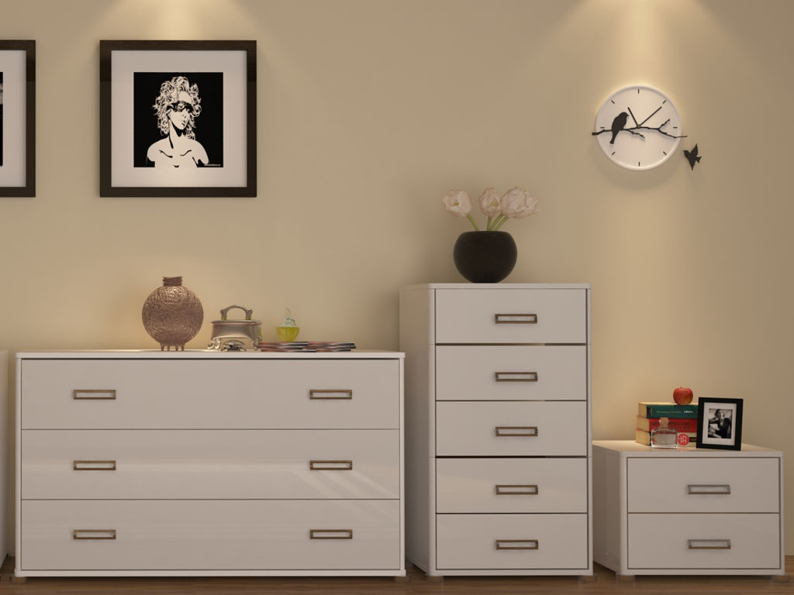
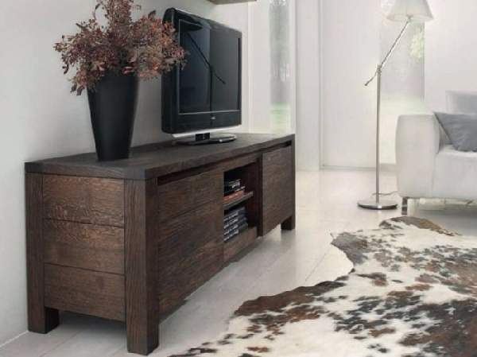
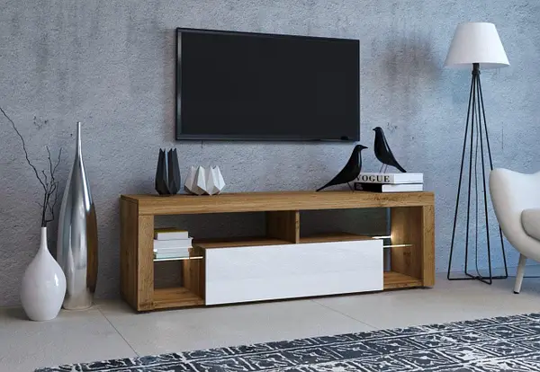
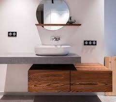

Комоды и тумбы
|  |
 |
 |
 |
| Тумбы "ПРЕМИУМ" |
Комод "К-6" |
Тумба под телевизор "Лайн" |
Тумба "Тоскана" |
| 8960 грн |
4320 грн |
5670 грн |
7205 грн |
Для особых потребностей
Теперь несколько слов о разнообразии нашего ассортимента.
Рядом с привычными комодами для спальни и гостиной, вы можете найти в нашем каталоге мебель особого назначения.
Например, пеленальный комод с увеличенной площадью столешницы для удобного пеленания вашего ребенка.
Такую мебель мы также изготовляем с учетом всех пожеланий заказчика. А в придачу даем гарантию на изделие – 2 года безупречной службы без поломок и ремонтов.
Но реальный срок службы нашей мебели гораздо больше! Например,
комоды для спальни редко испытывают экстремальные нагрузки и способны служить своим хозяевам и 10, и 20 лет!
На главную